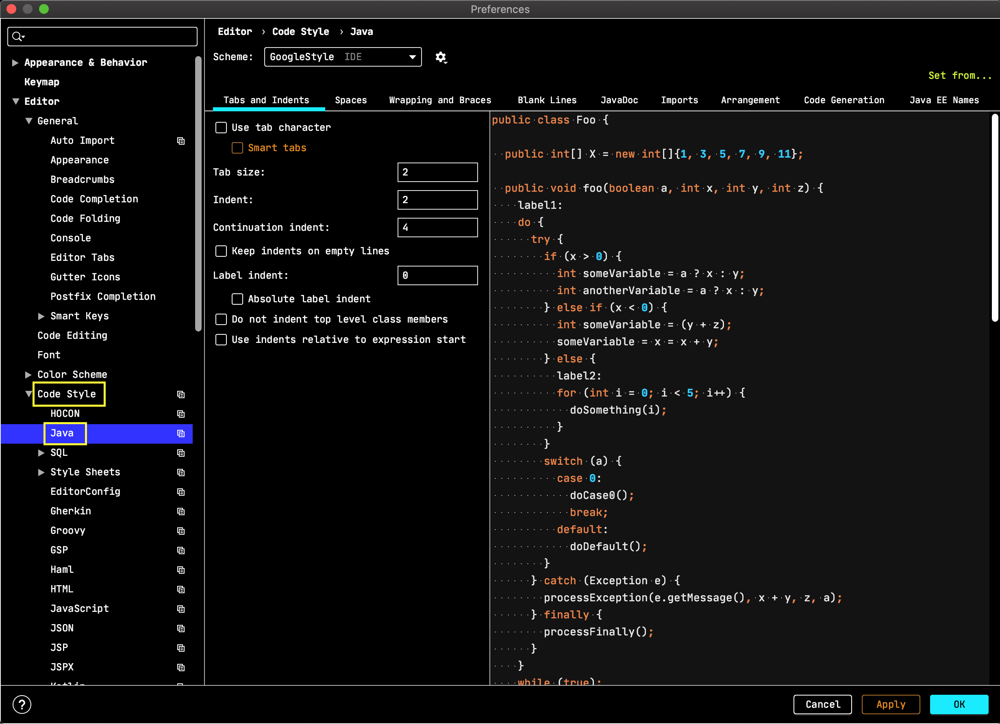
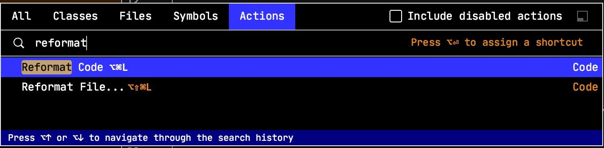

Recipe 1: Code format using IntelliJ Idea and .editorconfig
Description
It is always important to comply with the best practices and code styles.
Moreover the ability to share the common format configuration between developers is almost a must have for the code quality.
.editorconfig is a trend in terms of code formatting/style, and Jetbrains team brings this to a new level to stay close to their Develop with pleasure motto.
Receipt
Configure the .editorconfig in IntelliJ Idea.
Besides the built-in .editorconfig formatting rules, IntelliJ Idea (2019.2+) provides additional ones, corresponding to the ones existent in this IDE.
Moreover .editorconfig files could be arranged hierarchically so that some rules might be overridden in a particular folder.
Context (prerequisites)
- IntelliJ Idea 2019.2+
Benefits
apart for the common editorconfig rules,
IntelliJ Idea support for .editorconfig go further and allows to (practically) configure every single Idea editor code style rules, those that can be seen in the Idea
Preferences | Editor | Code Style | Javaand image below.
and through Idea reformat code action and idea intentions all wrongly formatted files could be addressed extremely easily
and, moreover, share the .editorconfig file in VCS (git) so that whoever works on the project use the same formatting rules.
Steps
create a new .editorconfig file in the project root, using
File | New | EditorConfig filemenu item.
in the dialog select the ij specific rules (as comments) for specific languages/file types.

check the .editorconfig changes using the preview
using the eye in the editor gutter.
after selecting a file as a target of the editor config preview, the editorconfig file is split with the target in the editor.

Idea automatically configure its code formatting support based on the existing .editorconfig file.
We can check if .editorconfig is enabled in Idea by getting to the Idea
Preferences | Editor | Code Style.
Idea show the support it is using for the current open file in (the right hand side of) the status bar.

Take away
Through .editorconfig improved support in IntelliJ idea developers can benefit from:
- working with the wellknown code style (formatting) tool - .editorconfig
- and furthermore take advantages of all Idea code style rules, actions and intentions.
- and have all this configuration auto-discovered by IntelliJ idea (no extra configuration on our side to benefit from a shared well setup .editorconfig)
Get the code well formatted just hit Find action or ctrl-shift-a and choose as can be seen below.
